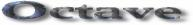

Many people have already contributed to Octave's development. In
addition to John W. Eaton, the following people have helped write parts
of Octave or helped out in various other ways.
Your name could be here - help
write new features for Octave! If you have contributed something and
your name is not on this list, contact
me.
- Thomas Baier wrote the
original versions of
popen, pclose,
execute, sync_system, and
async_system.
- Karl Berry wrote the
kpathsea library that allows Octave to recursively search
directory paths for function and script files.
- Georg Beyerle contributed
code to save values in MATLAB's .mat-file , and has
provided many useful bug reports and suggestions.
- John Campbell wrote most of
the file and C-style input and output functions.
- Brian Fox wrote the
readline library used for command history editing, and
the portion of this manual that documents it.
- Klaus
Gebhardt ported Octave to OS/2.
- A. Scottedward Hodel
contributed a number of functions including
expm,
qzval, qzhess, syl,
lyap, and balance.
- Kurt Hornik provided
the
corrcoef, cov, fftconv,
fftfilt, gcd, lcd,
kurtosis, null, orth,
poly, polyfit, roots, and
skewness functions, supplied documentation for these and
numerous other functions, rewrote the Emacs mode for editing Octave
code and provided its documentation, and has helped tremendously with
testing. He has also been a constant source of new ideas for
improving Octave.
- Phil Johnson has
helped to make Linux releases available.
- Friedrich Leisch provided
the
mahalanobis function.
- Ken Neighbors has
provided many useful bug reports and comments on MATLAB
compatibility.
- Rick Niles rewrote
Octave's plotting functions to add line styles and the ability to
specify an unlimited number of lines in a single call. He also
continues to track down odd incompatibilities and bugs.
- Mark Odegard provided
the initial implementation of
fread, fwrite,
feof, and ferror.
- Tony Richardson wrote
Octave's image processing functions as well as most of the original
polynomial functions.
- R. Bruce Tenison wrote the
hess and schur functions.
- Teresa Twaroch provided
the functions
gls and ols.
- Andreas Weingessel
wrote the audio functions
lin2mu, loadaudio,
mu2lin, playaudio, record,
saveaudio, and setaudio.
- Fook Fah Yap provided the
fft and ifft functions and valuable bug
reports for early versions.
Special thanks to the following people and organizations for
supporting the development of Octave:
- The National Science Foundation, through grant numbers
CTS-0105360, CTS-9708497, CTS-9311420, and CTS-8957123.
- The industrial members of the Texas-Wisconsin Modeling and Control
Consortium (TWMCC).
- The Paul A. Elfers Endowed Chair in Chemical Engineering at the
University of Wisconsin-Madison.
- Digital Equipment Corporation, for an equipment grant as part of
their External Research Program.
- Sun Microsystems, Inc., for an Academic Equipment grant.
- International Business Machines, Inc., for providing equipment as
part of a grant to the University of Texas College of
Engineering.
- Texaco Chemical Company, for providing funding to continue the
development of this software.
- The University of Texas College of Engineering, for providing a
Challenge for Excellence Research Supplement, and for providing an
Academic Development Funds grant.
- The State of Texas, for providing funding through the Texas
Advanced Technology Program under Grant No. 003658-078.
- Noel Bell, Senior Engineer, Texaco Chemical Company, Austin Texas.
- James B. Rawlings, Professor, University of Wisconsin-Madison,
Department of Chemical Engineering.
- Richard Stallman, for writing GNU.